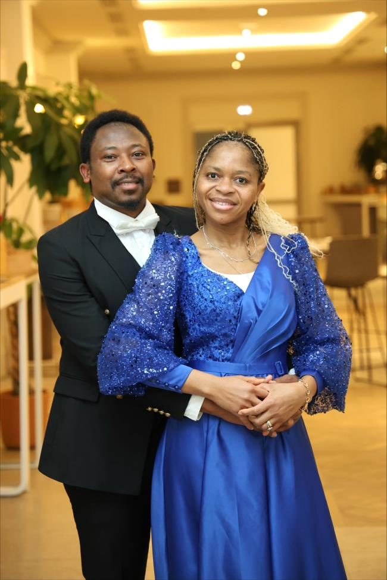
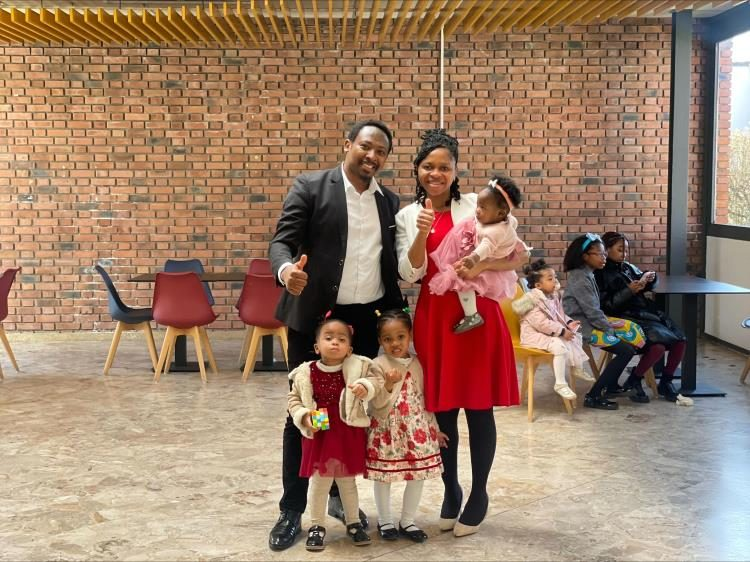

Bonjour, moi c'est Nathanaël
Je m'appelle Raoul Nathanaël…
J'ai grandi dans une famille chrétienne…
Les débuts de ma quête
À partir de mes 10 ans, une soif s'est installée…
J'ai interrogé des aînés…
« Seigneur, je sais que je ne suis pas parfait… »
La question qui m'a bouleversé
À 15 ans, en 2001, un grand frère m'a posé une question…
« Raoul, es-tu sauvé ? »
Je ne savais pas quoi répondre…
« Car c'est par la grâce que vous êtes sauvés… »
Le déclic
À la lecture de ce passage, comme des écailles sont tombées de mes yeux…
J'ai ouvert mon cœur. Mon cœur a changé.
Ma transformation — une nouvelle création
À partir de ce jour, je suis entré dans l'expérience merveilleuse de 2 Corinthiens 5:17 :
« Si quelqu'un est en Christ, il est une nouvelle création… »
Mon approche de la vie a changé…
Ma Nouvelle Vie en Jésus
Depuis ce jour, une passion m'habite : partager ce trésor.
J'étais en Première Scientifique…
Un premier livret est né. J'avais 16 ans.
Je l'ai fait lire à mon ami…
Grandir dans la foi — GBU / IFES
J'ai ensuite rejoint un mouvement d'étudiants chrétiens évangéliques…
Mon métier — la rigueur des projets critiques
En parallèle de cette vie de foi, je me suis formé comme Ingénieur en Systèmes d'Information…
Je le précise pour une raison simple : ce que je partage ici n'est pas un refuge.
Aujourd'hui — en France, en famille, au service de Dieu
À 23 ans, j'ai commencé un parcours qui m'a conduit à voyager pour Christ…

Dieu m'a béni d'une merveilleuse épouse, et nous avons trois filles.

Nous avons rejoint l'Organisation Chrétienne VIE…
Un mot pour toi
Ce que Dieu a fait dans ma vie, Il peut le faire dans la tienne.
Il n'y a pas de « bon moment »…
Prends ton temps sur ce site…
Que Dieu te bénisse, et que Sa grâce t'accompagne dans le voyage.
— Nathanaël